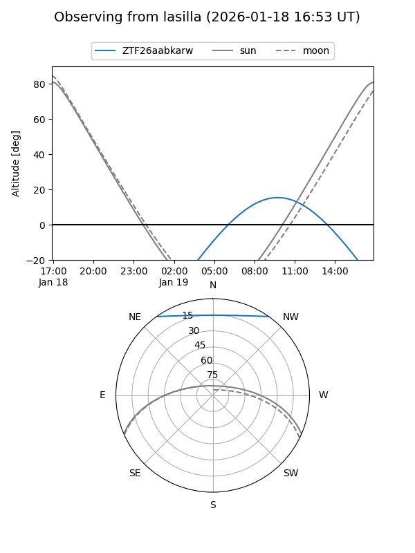
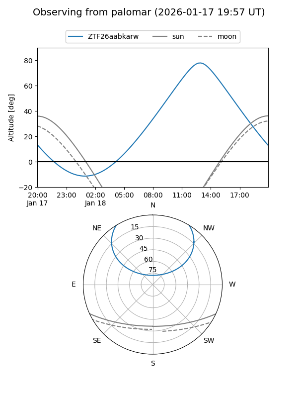

ZTF26aabkarw
Target ZTF26aabkarw at 2026-01-18 10:51
Aliases and brokers:
FINK: link
Lasair: link
ALeRCE: link
alt names
ZTF26aabkarw (ztf,fink_ztf)
Coordinates:
equatorial (ra, dec) = 193.9642,+45.45266
equatorial (HMS+DMS) = 12:55:51.41,+45:27:09.58
galactic (l, b) = (120.4691,+71.65446)
Flags:
Photometry:
last ztfg=20.05
1 ztfg detections
Lightcurve

Visibility


Additional plots